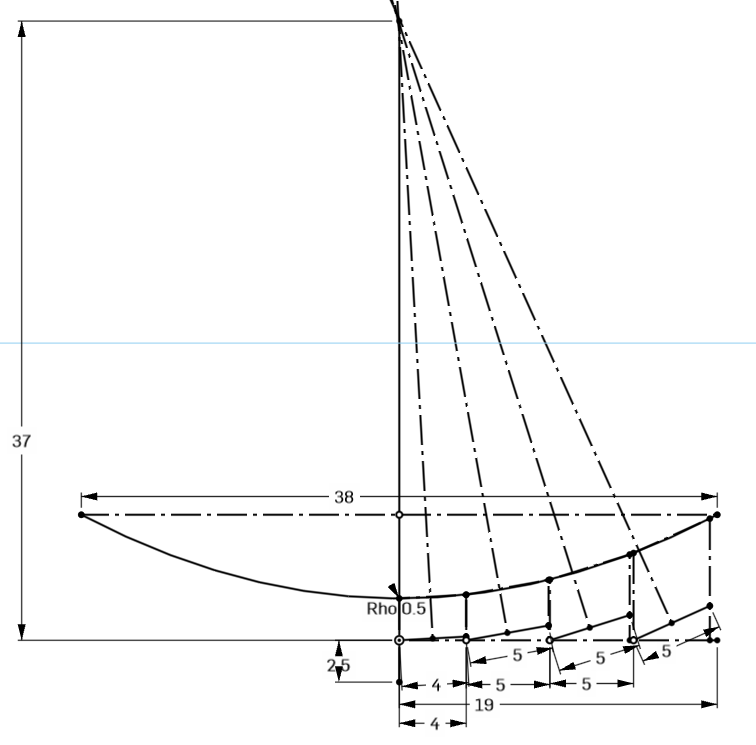

<topbar style="display:none;">
<item><a href="../index.html">Home</a></item>
<item><a href="../about.html">About</a></item>
</topbar>
<!-- This is a comment, it is ignored by the compiler/interpreter -->
# Week 10
<div></div>
## Overview
<div></div>
This week we built the first full-scale prototypes for our designs. I laid out the reflector angles and spacing in OnShape, after running into issues with Fusion's constraint solver failing to properly recognize sketch mates involving conic sections.
<div class="container">

<div class="container__text">
Test
</div>
</div>